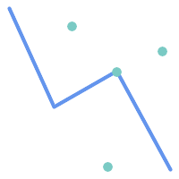
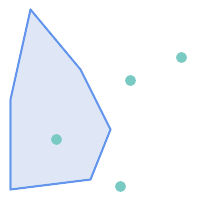
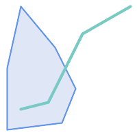
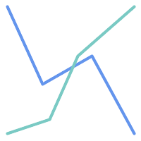

Name
ST_Crosses — 与えられたジオメトリが共通の内部の点を持ち、かつそうでない内部の点を持つ場合に、TRUEを返します。
Synopsis
boolean ST_Crosses(geometry g1, geometry g2);
説明
与えられたジオメトリ表現が「空間的にクロスしている」場合にはTRUEを返します。\
'='よりも「よりよい」答を得るために使います。空間的に同じということは、ST_Within(A,B) = trueかつST_Within(B,A) = trueとなります。また、ポイントの順序が違っても同じジオメトリ構造ならtrueとなります。構成ポイントの順序の確認にはST_OrderingEqualsを使用します (ST_OrderingEqualsはポイントのオーダが同じかを確認するよりも若干厳しくなります)。
数学的に述べると、次のようになります。

DE-9IMインタセクション行列が次の通り合致するとジオメトリはクロスしています。
Point/Line, Point/Area, Line/Areaの場合には
T*T******Line/Point, Area/Point, Area/Lineの場合には
T*****T**Line/Lineの場合には
0********
Point/PointとArea/Areaの場合には、この述語はFALSEを返します。
OpenGIS Simple Feature Specificationでは、この述語はPoint/Line, Point/Area, Line/Line, Line/Areaの場合についてのみ定義されています。JTS/GEOSでは、Line/Point, Area/Point, Area/Lineについて拡張しています。これによって関係が対称になっています。
![[Note]](images/note.png) | |
This function automatically includes a bounding box comparison that makes use of any spatial indexes that are available on the geometries. |
![[Important]](images/important.png) | |
Enhanced: 3.0.0 |
 This method implements the OGC Simple Features
Implementation Specification for SQL 1.1. s2.1.13.3
This method implements the OGC Simple Features
Implementation Specification for SQL 1.1. s2.1.13.3
This method implements the SQL/MM specification. SQL-MM 3: 5.1.29
例
次の場合には全てTRUEを返します。

| 
|

| 
|
roads (道路)とhighways (高速道路)の2つのテーブルを持っている場面を考えます。
CREATE TABLE roads ( id serial NOT NULL, geom geometry, CONSTRAINT roads_pkey PRIMARY KEY (road_id) );
|
CREATE TABLE highways ( id serial NOT NULL, the_gem geometry, CONSTRAINT roads_pkey PRIMARY KEY (road_id) );
|
次のようなクエリを使って、highwayとクロスするroadsのリストを決定します。
SELECT roads.id FROM roads, highways WHERE ST_Crosses(roads.geom, highways.geom);